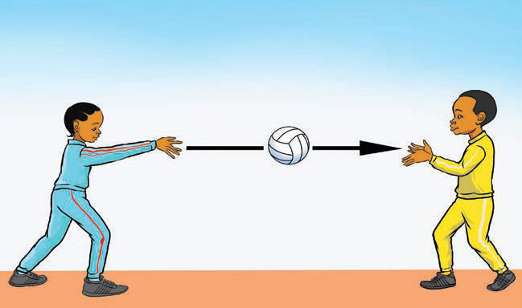
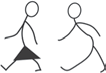

Pasi ya kifua
Pasi ya kifua ni aina ya pasi inayotolewa kutoka kifuani kwa mchezaji kwenda kifuani kwa mchezaji mwenzake kwa kutumia mikono yote miwili. Pasi hii mara nyingi ni ya haraka, rahisi na ya ufanisi hususani kwa umbali mfupi. Kuweza kufanikisha, mchezaji lazima ashike mpira kwa mikono miwili na kuuweka mbele ya kifua chake, halafu ausukume kwa nguvu na umahiri kuelekea kwa mchezaji mwenzake kama inavyoonekana katika Kielelezo namba 10.

Pasi ya mdundo
Ni aina ya pasi ambapo mpira unarushwa kwa mchezaji mwingine kwa kuudundisha chini mara moja kabla haujamfikia mpokeaji. Pasi hii hutolewa kwa mchezaji kwa kushika mpira kwa mikono miwili kisha kudundisha kwa nguvu kimshazari ili pasi ifike kwa mchezaji husika. Aina hii ya pasi husaidia kuzuia mpinzani kuudaka mpira kwani imelengwa kwa usahihi na kwa kasi. Pasi hii hufaa kutolewa katika umbali mfupi kama inavyoonekana kwenye Kielelezo namba 11.

Fanya mazoezi ya pasi ya kifua.